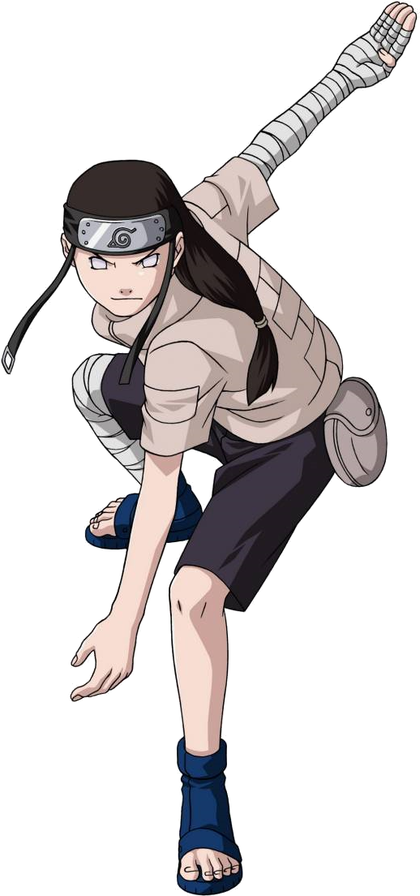
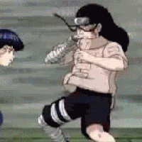
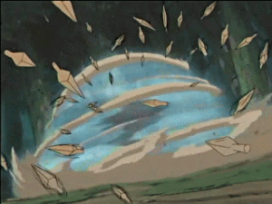
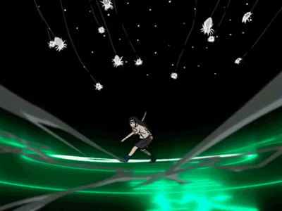
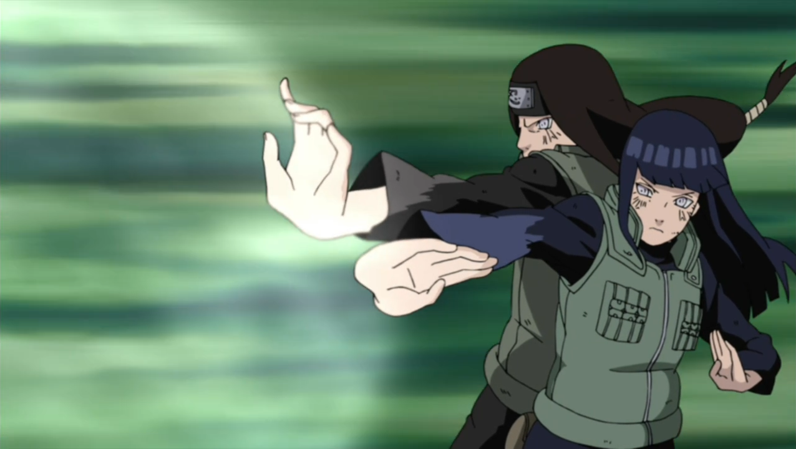

História
 Neji é um membro do time Guy, junto com Rock Lee, Tenten e Guy Sensei. É considerado o prodigío do clã Hyuuga, aprendeu sozinho uma técnica reservada apenas à linhagem principal. Apesar de ser um dos ninjas mais habilidosos da geração do Naruto, foi pouco aproveitado no anime e morreu na Quarta Guerra Ninja para proteger Hinata.
Principais Técnicas
Byakugan

Kekkei Genkai do clã Hyuuga, o Byakugan é o doujutsu com maior penetração visual, capaz de enxergar os pontos de chackra do inimigo, além de ter um campo de visão de 360º.
Punho gentil
É um estilo de luta exclusivo do clã Hyuuga por depender da visão do Byakugan, os golpes são direcionados aos pontos de Chackra, impedindo o adversário de usar Ninjutsu e danificando os orgãos internos.
Oito Trigramas: Palmas Giratórias do Céu
O usuário emite chackra de todos os pontos de chackra do corpo e girando rapidamente, cria um escudo em volta de si, capaz de repelir ataques de todas as direções ao mesmo tempo
Oito triligramas: 64 golpes
o usuário desfere 64 golpes de punho gentil, bloqueando o fluxo de toda a rede de chackra do inimigo, tornando seu corpo inutilizavel ou matando.
Palma de vácuo
É uma versão do punho gentil em que o golpe é emitido em média distancia.